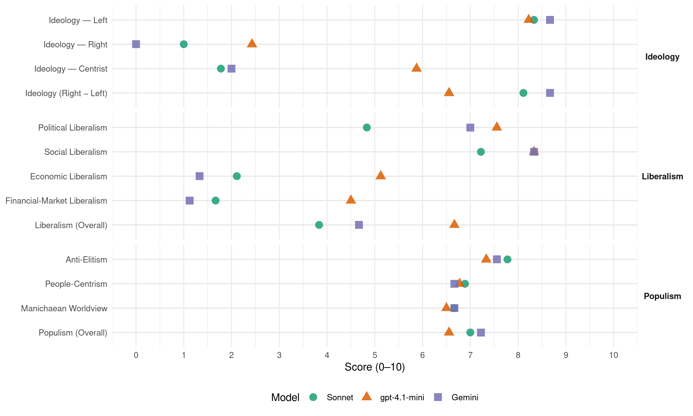

PTB/PVDA (Belgium, 2019)
manifesto_id 21230_201905
Get full text: This site shows derived annotations and short verbatim quotes only. The full manifesto text is © Manifesto Project / WZB — obtain it via manifesto-project.wzb.eu using the manifesto_id above.
Headline scores
| Dimension | Sonnet | gpt-4.1-mini | Gemini |
|---|---|---|---|
| Populism (Overall) | 7.0 | 6.6 | 7.2 |
| Anti-Elitism | 7.8 | 7.3 | 7.6 |
| People-Centrism | 6.9 | 6.8 | 6.7 |
| Manichaean Worldview | 6.7 | 6.5 | 6.7 |
| Ideology (Right − Left) | 8.1 | 6.6 | 8.7 |
| Liberalism (Overall) | 3.8 | 6.7 | 4.7 |
| Political Liberalism | 4.8 | 7.6 | 7.0 |
| Social Liberalism | 7.2 | 8.3 | 8.3 |
| Economic Liberalism | 2.1 | 5.1 | 1.3 |
| Financial-Market Liberalism | 1.7 | 4.5 | 1.1 |
Evidence per dimension
Economic Liberalism
Gemini · score 1.0 · verified · chunk 1
“We zetten de markt buitenspel”
voldoende financiële middelen voor hebben. We zetten de markt buitenspel en investeren in een publieke gezondheidszorg
Gemini · score 1.0 · verified · chunk 2
“wijzen elke commercialisering of vermarkting van sociaal werk af”
We sluiten langetermijn convenanten met het sociale middenveld en wijzen elke commercialisering of vermarkting van sociaal werk af. We zetten in op structurele financiering.
Gemini · score 2.0 · verified · chunk 3
“vervangen we de emissiehandel door bindende normen”
verlammende concurrentielogica te overwinnen. Daarom vervangen we de emissiehandel door bindende normen, met een helder pad
Gemini · score 1.0 · verified · chunk 4
“bepaalde basisproducten, zoals melk en vlees, leggen we minimumprijzen vast”
Voor bepaalde basisproducten, zoals melk en vlees, leggen we minimumprijzen vast.
Gemini · score 1.0 · verified · chunk 5
“Geen vermarkting van de zorg”
financiering van de zorg blijft bij de zorgorganisaties en de betaling van opvangplaatsen. Geen vermarkting van de zorg. TWEE. AANGEPAST
Gemini · score 2.0 · verified · chunk 6
“verbieden we de app van Uber”
Net als in veel andere steden in de wereld verbieden we de app van Uber. We zetten valse zelfstandigencontracten
Gemini · score 2.0 · verified · chunk 7
“de vermarkting van het jeugdwerk bedreigt de onafhankelijkheid”
te bouwen aan langdurige projecten. De vermarkting van het jeugdwerk bedreigt de onafhankelijkheid ervan. Het jeugdwerk kraakt onder de werkdruk
Gemini · score 1.0 · verified · chunk 8
“Europese verdragen duwen richting liberalisering en privatisering”
Maar de Europese verdragen duwen richting liberalisering en privatisering ervan.
Gemini · score 1.0 · verified · chunk 9
“overheidsmonopolies om de sleutelsectoren te beschermen”
Een Europa met een centrale rol voor openbare sectoren. Met overheidsmonopolies om de sleutelsectoren te beschermen tegen de haaien
gpt-4.1-mini · score 3.0 · verified · chunk 1
“We stoppen de sociale afbraak en verhogen de koopkracht”
Wij komen op voor vast werk en volwaardige lonen. We stoppen de sociale afbraak en verhogen de koopkracht. We maken korte metten met flexi-jobs en nul-uurcontracten en beschermen werknemers tegen dolgedraaide flexibiliteit en banenverlies.
gpt-4.1-mini · score 7.0 · verified · chunk 2
“We scheppen 20.000 nieuwe, volwaardige jobs in de sociale economie en werken zo de wachtlijsten weg.”
DRIE. VAST EN VOLWAARDIG WERK, OOK VOOR MENSEN IN EEN KWETSBARE POSITIE … We scheppen 20.000 nieuwe, volwaardige jobs in de sociale economie en werken zo de wachtlijsten weg.
gpt-4.1-mini · score 6.0 · verified · chunk 3
“We vervangen de emissiehandel door bindende normen”
Daarom vervangen we de emissiehandel door bindende normen, met een helder pad naar negatieve emissies in 2050. Zo wordt de industrie genoodzaakt drastische energiebesparende maatregelen te nemen.
gpt-4.1-mini · score 5.0 · verified · chunk 4
“progressieve fiscaliteit op vastgoed”
We organiseren een progressieve fiscaliteit op vastgoed. Die houdt rekening met de waarde van het vastgoed, het aantal woningen in iemands bezit en het totale inkomen en vermogen.
gpt-4.1-mini · score 7.0 · verified · chunk 5
“We beëindigen ook het nefaste beleid van publiek-private samenwerking”
We beëindigen ook het nefaste beleid van publiek-private samenwerking (pps) bij de bouw van scholen, zwembaden, wegen en spoorlijnen. De pps-projecten staan voor private winsten en publieke risico’s.
gpt-4.1-mini · score 5.0 · mixed · chunk 6
“de federale en gewestelijke overheden laten de innovatie van nieuwe apps en technologieën over aan de vrije markt”
De federale en gewestelijke overheden laten de innovatie van nieuwe apps en technologieën over aan de vrije markt en aan private investeerders. Projecten met snel geldgewin als opzet sluiten haast vanzelf minder bemiddelden uit. En maar heel weinig sociale digitale projecten komen van de grond.
gpt-4.1-mini · score 6.0 · verified · chunk 7
“We zorgen voor genoeg sociale voorzieningen zodat we wedijver tussen mensen die het moeilijk hebben, voorkomen”
We zorgen voor genoeg sociale voorzieningen zodat we wedijver tussen mensen die het moeilijk hebben, voorkomen. We streven naar een arbeidsmarkt met voldoende kwaliteitsbanen om zo de concurrentie voor schaarse vacatures uit te schakelen.
gpt-4.1-mini · score 4.0 · verified · chunk 8
“Wij verzetten ons tegen de privatisering van het recht waarbij staten en volkeren aan rechten inboeten”
Wij verzetten ons tegen de privatisering van het recht waarbij staten en volkeren aan rechten inboeten in het voordeel van multinationale ondernemingen.
gpt-4.1-mini · score 3.0 · verified · chunk 9
“Vermarkting, concurrentie en besparingen zijn de Europese ordewoorden”
Want vandaag draait alles krom. Vermarkting, concurrentie en besparingen zijn de Europese ordewoorden. Openbare diensten worden kapot bespaard. Vermarkten is immers: de openbare sector terugdringen en alles overleveren aan de winstlogica. De concurrentieen besparingsdynamiek maakt Europa kapot.
Sonnet · score 2.0 · verified · chunk 1
“markt buitenspel en investeren in een publieke gezondheidszorg”
We zetten de markt buitenspel en investeren in een publieke gezondheidszorg van kwaliteit en op mensenmaat
Sonnet · score 2.0 · verified · chunk 2
“de vrijmaking van de energiemarkt”
De vrijmaking van de energiemarkt, het emissiehandelssysteem, de eeuwige nadruk op de individuele verantwoordelijkheid… het is allemaal nefast geweest.
Sonnet · score 2.0 · verified · chunk 3
“liberalisering van de markt, de daling van de landbouwprijzen”
Door de liberalisering van de markt, de daling van de landbouwprijzen en het grotere beslag op die prijzen door toeleveranciers en afnemers, zijn de boeren in een dolle wedren naar competitiviteit terechtgekomen.
Sonnet · score 2.0 · verified · chunk 4
“minimumprijzen vast”
Voor bepaalde basisproducten, zoals melk en vlees, leggen we minimumprijzen vast.
Sonnet · score 3.0 · verified · chunk 5
“handelsvrijheid verstoren en de concurrentie vervalsen”
investeren van overheidsgeld in cultuur zou de handelsvrijheid verstoren en de concurrentie vervalsen. Intussen wordt de greep van de cultuurmonopolies almaar verstikkender.
Sonnet · score 3.0 · verified · chunk 6
“innovatie van nieuwe apps en technologieën over aan de vrije markt”
De federale en gewestelijke overheden laten de innovatie van nieuwe apps en technologieën over aan de vrije markt en aan private investeerders. Projecten met snel geldgewin als opzet sluiten haast vanzelf minder bemiddelden uit.
Sonnet · score 2.0 · verified · chunk 7
“België een van de meest liberale landen”
Op het vlak van ontslag is België een van de meest liberale landen. Anders dan in Duitsland, Frankrijk en Nederland kan een werkgever bij ons altijd overgaan tot ontslag, zelfs als hij daar geen reden voor heeft.
Sonnet · score 2.0 · verified · chunk 8
“richting liberalisering en privatisering”
Wij willen kwaliteitsvolle openbare diensten en het recht bepaalde sectoren te vermaatschappelijken. Maar de Europese verdragen duwen richting liberalisering en privatisering ervan.
Sonnet · score 1.0 · verified · chunk 9
“De privatiseringen, in al hun vormen, zijn mislukt”
De basisfunctie van een openbare dienst is: diensten verlenen aan de gemeenschap. De privatiseringen, in al hun vormen, zijn mislukt. We weigeren nog meer openbare diensten te privatiseren.
Financial-Market Liberalism
Gemini · score 2.0 · verified · chunk 2
“willen een doorgedreven controle op de hele kredietsector”
Overal lokt en lonkt het gemakkelijke krediet. We zien vaak leugenachtige aanbiedingen, de kredietwaardigheid wordt dikwijls slecht gecontroleerd. We willen een doorgedreven controle op de hele kredietsector.
Gemini · score 2.0 · verified · chunk 3
“richten we een openbare landbouwbank op”
ondersteuning nodig. Daarom richten we een openbare landbouwbank op, als een filiaal van de openbare bank
Gemini · score 1.0 · verified · chunk 4
“richten we een openbare landbouwbank op”
Ze hebben ondersteuning nodig. Daarom richten we een openbare landbouwbank op, als een filiaal van de openbare bank.
Gemini · score 1.0 · verified · chunk 5
“oprichting van een nieuwe grote openbare bank”
We beginnen eraan met de oprichting van een nieuwe grote openbare bank 4.0. Een bank die een
Gemini · score 1.0 · verified · chunk 6
“schaffen het bankgeheim af”
We schaffen het bankgeheim af en verplichten de banken aan de fiscus het saldo mee te delen
Gemini · score 1.0 · verified · chunk 7
“industriële en financiële mastodonten controleren de economische sectoren”
DEMOCRATISCHE RECHTEN Het is een wereldfenomeen: industriële en financiële mastodonten controleren de economische sectoren en staten helpen hen die controle te behouden
Gemini · score 1.0 · verified · chunk 8
“We verbieden hedgefondsen en gestructureerde financiële producten”
We verbieden hedgefondsen en gestructureerde financiële producten (derivaten), evenals kortetermijnspeculatie en short selling.
Gemini · score 0.0 · verified · chunk 9
“We verbieden hedgefondsen en gestructureerde financiële producten”
ten nadele van particuliere banken. We verbieden hedgefondsen en gestructureerde financiële producten (derivaten), evenals kortetermijnspeculatie
gpt-4.1-mini · score 2.0 · verified · chunk 1
“We vorderen alle overheidssteun, subsidies en belastingkortingen terug”
We vorderen alle overheidssteun, subsidies en belastingkortingen terug van winstgevende bedrijven die toch afdanken. We verplichten bedrijven die collectief willen afdanken eerst alternatieven uit te werken: arbeidsduurvermindering, een reconversieplan …
gpt-4.1-mini · score 6.0 · verified · chunk 2
“We richten een Energiefonds op om zware energieschulden gedeeltelijk kwijt te schelden wanneer volledige schuldaflossing niet realistisch is.”
VIJF. ENERGIE EN WATER ZIJN MENSENRECHTEN … We richten een Energiefonds op om zware energieschulden gedeeltelijk kwijt te schelden wanneer volledige schuldaflossing niet realistisch is.
gpt-4.1-mini · score 8.0 · verified · chunk 5
“De overheidssteun per inwoner is voor de twee omroepen nu bij de laagste van Europa”
De openbare omroepen voor radio, televisie en nieuwe media – VRT en RTBF – moeten het opnemen tegen grote multimediaconglomeraten die hen naar de marge willen duwen. Tegelijk liggen ze onder het bezuinigingsvuur van het beleid. De overheidssteun per inwoner is voor de twee omroepen nu bij de laagste van Europa.
gpt-4.1-mini · score 6.0 · verified · chunk 6
“We schaffen het bankgeheim af en verplichten de banken aan de fiscus het saldo mee te delen”
We richten een aparte cel “grote vermogens” bij het ministerie van Financiën. We schaffen het bankgeheim af en verplichten de banken aan de fiscus het saldo mee te delen en jaarlijks een synthese te geven van de transacties met bankrekeningen en met rekeningen van buitenlandse dochtermaatschappijen.
gpt-4.1-mini · score 3.0 · verified · chunk 8
“Wij heffen het bankgeheim op en geven meer middelen aan de inspectiediensten van Financiën”
Met de middelen die door de afschafng van het verbod op cannabis bij Justitie vrijkomen, pakken we de strijd tegen de grote dealers aan. We zorgen voor een versteviging van de douanediensten in de haven van Antwerpen. We heffen het bankgeheim op en geven meer middelen aan de inspectiediensten van Financiën.
gpt-4.1-mini · score 2.0 · verified · chunk 9
“We verbieden hedgefondsen en gestructureerde financiële producten”
We doen een burgeraudit van de overheidsschuld en organiseren een Europese conferentie die leidt tot moratoria, lagere interestvoeten, schuldherschikkingen en gedeeltelijke schuldannuleringen ten nadele van particuliere banken. We willen rechtvaardige fiscaliteit voorrang geven op het vrije verkeer van kapitaal. Wij leggen de Tobintaks weer op tafel. We verbieden hedgefondsen en gestructureerde financiële producten (derivaten), evenals kortetermijnspeculatie en short selling.
Sonnet · score 2.0 · verified · chunk 1
“intense controle op de hele kredietsector”
We voorkomen het ophopen van schulden en doen daarom een intense controle op de hele kredietsector met daarbij consequente, strenge sancties
Sonnet · score 2.0 · verified · chunk 2
“doorgedreven controle op de hele kredietsector”
We willen een doorgedreven controle op de hele kredietsector. Met consequente en strenge sancties.
Sonnet · score 2.0 · verified · chunk 3
“Speculatie op landbouwen voedingsproducten is verboden”
We reguleren de gemeenschappelijke markt van de belangrijkste landbouwproducten. Speculatie op landbouwen voedingsproducten is verboden en wordt streng bestraft.
Sonnet · score 2.0 · verified · chunk 4
“openbare landbouwbank op, als een filiaal”
Daarom richten we een openbare landbouwbank op, als een filiaal van de openbare bank.
Sonnet · score 2.0 · verified · chunk 5
“verboden uit te lenen aan financieringsfondsen”
Anders dan bij private banken is het voor deze bank verboden uit te lenen aan financieringsfondsen zoals hedge funds of mutual funds.
Sonnet · score 2.0 · verified · chunk 6
“taks op financiële transacties invoeren: de Tobin-taks”
Wij willen een belasting op financiële transacties invoeren: de Tobin-taks. Tien lidstaten van de Europese Unie, waaronder België, buigen zich al jaren over het invoeren van deze Tobin-taks
Sonnet · score 2.0 · verified · chunk 7
“financiële mastodonten controleren de economische sectoren”
Het is een wereldfenomeen: industriële en financiële mastodonten controleren de economische sectoren en staten helpen hen die controle te behouden.
Sonnet · score 1.0 · verified · chunk 8
“Wij leggen de Tobintaks weer op tafel”
Wij willen rechtvaardige fiscaliteit voorrang geven op het vrije verkeer van kapitaal. Wij leggen de Tobintaks weer op tafel. We verbieden hedgefondsen en gestructureerde financiële producten
Sonnet · score 0.0 · verified · chunk 9
“verbieden hedgefondsen en gestructureerde financiële producten”
We verbieden hedgefondsen en gestructureerde financiële producten (derivaten), evenals kortetermijnspeculatie en short selling.
Political Liberalism
Gemini · score 5.0 · verified · chunk 1
“volksvertegenwoordiger Raoul Hedebouw van de”
sociale beweging is zich blijven verzetten. Volksvertegenwoordiger Raoul Hedebouw van de PVDA verzette zich vijf jaar
Gemini · score 6.0 · verified · chunk 2
“zo versterkt sociaal werk het democratische gehalte”
Sociaal werk heeft de taak de stem van de mensen die onbeschermd zijn, hoorbaar te maken. Zo versterkt sociaal werk het democratische gehalte van onze samenleving.
Gemini · score 6.0 · verified · chunk 3
“recht op water op in artikel 23 van de Grondwet”
EEN. GEGARANDEERD RECHT OP WATER VOOR IEDEREEN We nemen het recht op water op in artikel 23 van de Grondwet. Water wordt toegevoegd
Gemini · score 8.0 · verified · chunk 4
“waardigheid daarom vast in de Belgische Grondwet”
welzijn van dieren als gevoelige wezens met eigen belangen en waardigheid daarom vast in de Belgische Grondwet.
Gemini · score 8.0 · verified · chunk 5
“verstevigen de academische vrijheid”
Wij verdedigen en verstevigen de academische vrijheid. Die is de laatste jaren herhaalde malen
Gemini · score 8.0 · verified · chunk 6
“de Universele Verklaring voor de Rechten”
We stellen de Universele Verklaring voor de Rechten van de Mens centraal in ons engagement
Gemini · score 7.0 · verified · chunk 7
“de klassieke grondrechten zoals het recht op vrije meningsuiting”
de eerste generatie mensenrechten: de klassieke grondrechten zoals het recht op vrije meningsuiting en de vrijheid van vereniging. Deze rechten worden
Gemini · score 8.0 · verified · chunk 8
“de scheiding der machten is een pijler van de rechtsstaat”
De scheiding der machten is een pijler van de rechtsstaat. De rechterlijke macht moet bescherming bieden
Gemini · score 7.0 · verified · chunk 9
“democratische vrijheden en mensenrechten”
Big Brother gaat bij ons de deur uit. We garanderen de democratische vrijheden en mensenrechten tegen massadatabanken
gpt-4.1-mini · score 7.0 · verified · chunk 1
“We tekenen Conventie 158 van de Internationale Arbeidsorganisatie”
Wij versterken die bescherming. We tekenen Conventie 158 van de Internationale Arbeidsorganisatie. Die verplicht de werkgevers elk ontslag te motiveren. Werknemers krijgen de kans om zich te verdedigen, met bijstand van de vakbond en hebben het recht in beroep te gaan bij de arbeidsrechtbank.
gpt-4.1-mini · score 8.0 · verified · chunk 2
“We versterken de stem van mensen in armoede en laten hen mee het armoedebeleid uittekenen.”
ZES. GEEF MENSEN IN ARMOEDE HET WOORD We versterken de stem van mensen in armoede en laten hen mee het armoedebeleid uittekenen. We investeren in de opleidingen voor ervaringsdeskundigen.
gpt-4.1-mini · score 7.0 · verified · chunk 3
“We nemen het recht op water op in artikel 23 van de Grondwet”
We nemen het recht op water op in artikel 23 van de Grondwet. Water wordt toegevoegd aan de lijst van goederen waarop geen beslag gelegd mag worden, volgens artikel 1408 van het Gerechtelijk Wetboek.
gpt-4.1-mini · score 7.0 · verified · chunk 4
“recht op wonen staat in de Belgische Grondwet”
Het recht op behoorlijke huisvesting staat in de Belgische Grondwet en ook in de Universele Verklaring van de Rechten van de Mens. Maar dat recht is dode letter.
gpt-4.1-mini · score 8.0 · verified · chunk 5
“artikel 23 van de Grondwet waar: “Iedereen heeft recht op culturele ontplooiing””
Dan maken we artikel 23 van de Grondwet waar: “Iedereen heeft recht op culturele ontplooiing”. Wij streven naar deelname van allen, met toegang voor allen. Tegenover de grote ‘creatieve industrieën’ opteren we voor een rijk kunsten cultuurleven van onderuit dat mensen actief en weerbaar maakt en hen energie geeft om hun leven en de samenleving aan te pakken.
gpt-4.1-mini · score 8.0 · verified · chunk 6
“We beschermen de vrijheid van vereniging en het recht op vrije meningsuiting”
We beschermen de vrijheid van vereniging en het recht op vrije meningsuiting via betogingen, flyers, acties, sociale media … Wetten en reglementen mogen deze rechten niet uithollen. We stellen de Universele Verklaring voor de Rechten van de Mens centraal in ons engagement voor een menselijke samenleving.
gpt-4.1-mini · score 7.0 · verified · chunk 7
“Wij verdedigen de eerste generatie mensenrechten: de klassieke grondrechten zoals het recht op vrije meningsuiting en de vrijheid van vereniging”
Voor ons is het essentieel dat deze grondrechten gewaarborgd blijven. We verdedigen de eerste generatie mensenrechten: de klassieke grondrechten zoals het recht op vrije meningsuiting en de vrijheid van vereniging.
gpt-4.1-mini · score 8.0 · verified · chunk 8
“Wij versterken het mandaat van de onderzoeksrechter”
Wij versterken het mandaat van de onderzoeksrechter. Een gerechtelijk onderzoek onder leiding van een onderzoeksrechter is efficiënt en geeft de nodige garanties voor verdachten en slachtoffers.
gpt-4.1-mini · score 8.0 · verified · chunk 9
“We garanderen de democratische vrijheden en mensenrechten”
We garanderen de democratische vrijheden en mensenrechten tegen massadatabanken, passagiersregisters en digitale vingerafdrukken. Klokkenluiders beschermen we.
Sonnet · score 3.0 · verified · chunk 1
“ondemocratische verhoging van de pensioenleeftijd”
Raoul Hedebouw van de PVDA verzette zich vijf jaar in het parlement tegen de ondemocratische verhoging van de pensioenleeftijd tot 67 jaar
Sonnet · score 4.0 · verified · chunk 2
“ecologische, democratische en sociale planning”
Met een kaderwet leggen we de basis voor een ecologische, democratische en sociale planning op alle beleidsniveaus om de uitstoot van broeikasgassen tegen 2050 tot nul te herleiden.
Sonnet · score 5.0 · verified · chunk 3
“controle door burgers en het middenveld”
Overheidsbedrijven in de watersector moeten transparant werken, met controle door burgers en het middenveld.
Sonnet · score 5.0 · verified · chunk 4
“in de Belgische Grondwet”
We nemen het principe van het welzijn van dieren als gevoelige wezens met eigen belangen en waardigheid op in de Belgische Grondwet
Sonnet · score 6.0 · verified · chunk 5
“academische vrijheid”
Wij verdedigen en verstevigen de academische vrijheid. Die is de laatste jaren herhaalde malen in het gedrang gekomen bij disciplinaire maatregelen tegen onderzoekers
Sonnet · score 6.0 · mixed · chunk 6
“bindend burgerreferendum in”
We voeren een bindend burgerreferendum in. Als 1% van het betrokken kiezerskorps dat vraagt wordt een voorstel of een beslissing voorgelegd aan de bevolking.
Sonnet · score 6.0 · verified · chunk 7
“bindend burgerreferendum”
Daarin past het bindend burgerreferendum. Als 1% van het betrokken kiezerskorps dat vraagt, wordt een voorstel of een beslissing voorgelegd aan de bevolking.
Sonnet · score 5.0 · mixed · chunk 8
“democratische controle op de werking”
Wij vergroten de parlementaire en democratische controle op de werking van het Comité P en het Comité I.
Sonnet · score 5.0 · mixed · chunk 9
“We garanderen de democratische vrijheden en mensenrechten”
Big Brother gaat bij ons de deur uit. We garanderen de democratische vrijheden en mensenrechten tegen massadatabanken, passagiersregisters en digitale vingerafdrukken.
Liberalism (Overall)
Gemini · score 5.0 · verified · chunk 1
“We zetten de markt buitenspel”
voldoende financiële middelen voor hebben. We zetten de markt buitenspel en investeren in een publieke gezondheidszorg
Gemini · score 4.0 · verified · chunk 2
“wijzen elke commercialisering of vermarkting van sociaal werk af”
We sluiten langetermijn convenanten met het sociale middenveld en wijzen elke commercialisering of vermarkting van sociaal werk af. We zetten in op structurele financiering.
Gemini · score 4.0 · verified · chunk 3
“vervangen we de emissiehandel door bindende normen”
verlammende concurrentielogica te overwinnen. Daarom vervangen we de emissiehandel door bindende normen, met een helder pad
Gemini · score 5.0 · verified · chunk 4
“mensen met een beperking zijn mensen met rechten”
Mensen met een beperking zijn mensen met rechten, net als ieder ander mens.
Gemini · score 5.0 · verified · chunk 5
“rechten van personen met een beperking”
Om die rechten te verzekeren is er het VN-Verdrag over de rechten van personen met een beperking van 13 december
Gemini · score 5.0 · verified · chunk 6
“de klassieke grondrechten zoals het recht”
We verdedigen de eerste generatie mensenrechten: de klassieke grondrechten zoals het recht op vrije meningsuiting en de vrijheid van vereniging.
Gemini · score 5.0 · verified · chunk 7
“de klassieke grondrechten zoals het recht op vrije meningsuiting”
de eerste generatie mensenrechten: de klassieke grondrechten zoals het recht op vrije meningsuiting en de vrijheid van vereniging. Deze rechten worden
Gemini · score 5.0 · verified · chunk 8
“de scheiding der machten is een pijler van de rechtsstaat”
De scheiding der machten is een pijler van de rechtsstaat. De rechterlijke macht moet bescherming bieden
Gemini · score 4.0 · verified · chunk 9
“democratische vrijheden en mensenrechten”
Big Brother gaat bij ons de deur uit. We garanderen de democratische vrijheden en mensenrechten tegen massadatabanken
gpt-4.1-mini · score 5.0 · verified · chunk 1
“We tekenen Conventie 158 van de Internationale Arbeidsorganisatie”
Wij versterken die bescherming. We tekenen Conventie 158 van de Internationale Arbeidsorganisatie. Die verplicht de werkgevers elk ontslag te motiveren. Werknemers krijgen de kans om zich te verdedigen, met bijstand van de vakbond en hebben het recht in beroep te gaan bij de arbeidsrechtbank.
gpt-4.1-mini · score 8.0 · verified · chunk 2
“We versterken de stem van mensen in armoede en laten hen mee het armoedebeleid uittekenen.”
ZES. GEEF MENSEN IN ARMOEDE HET WOORD We versterken de stem van mensen in armoede en laten hen mee het armoedebeleid uittekenen. We investeren in de opleidingen voor ervaringsdeskundigen.
gpt-4.1-mini · score 7.0 · verified · chunk 3
“We nemen het recht op water op in artikel 23 van de Grondwet”
We nemen het recht op water op in artikel 23 van de Grondwet. Water wordt toegevoegd aan de lijst van goederen waarop geen beslag gelegd mag worden, volgens artikel 1408 van het Gerechtelijk Wetboek.
gpt-4.1-mini · score 7.0 · verified · chunk 4
“recht op behoorlijke huisvesting staat in de Belgische Grondwet”
Het recht op behoorlijke huisvesting staat in de Belgische Grondwet en ook in de Universele Verklaring van de Rechten van de Mens. Maar dat recht is dode letter.
gpt-4.1-mini · score 8.0 · verified · chunk 5
“We beëindigen ook het nefaste beleid van publiek-private samenwerking”
We beëindigen ook het nefaste beleid van publiek-private samenwerking (pps) bij de bouw van scholen, zwembaden, wegen en spoorlijnen. De pps-projecten staan voor private winsten en publieke risico’s.
gpt-4.1-mini · score 7.0 · verified · chunk 6
“We beschermen de vrijheid van vereniging en het recht op vrije meningsuiting”
We beschermen de vrijheid van vereniging en het recht op vrije meningsuiting via betogingen, flyers, acties, sociale media … Wetten en reglementen mogen deze rechten niet uithollen. We stellen de Universele Verklaring voor de Rechten van de Mens centraal in ons engagement voor een menselijke samenleving.
gpt-4.1-mini · score 7.0 · verified · chunk 7
“Wij verdedigen de eerste generatie mensenrechten: de klassieke grondrechten zoals het recht op vrije meningsuiting en de vrijheid van vereniging”
Voor ons is het essentieel dat deze grondrechten gewaarborgd blijven. We verdedigen de eerste generatie mensenrechten: de klassieke grondrechten zoals het recht op vrije meningsuiting en de vrijheid van vereniging.
gpt-4.1-mini · score 6.0 · verified · chunk 8
“Wij versterken het mandaat van de onderzoeksrechter”
Wij versterken het mandaat van de onderzoeksrechter. Een gerechtelijk onderzoek onder leiding van een onderzoeksrechter is efficiënt en geeft de nodige garanties voor verdachten en slachtoffers.
gpt-4.1-mini · score 5.0 · verified · chunk 9
“We doen een burgeraudit van de overheidsschuld”
We doen een burgeraudit van de overheidsschuld en organiseren een Europese conferentie die leidt tot moratoria, lagere interestvoeten, schuldherschikkingen en gedeeltelijke schuldannuleringen ten nadele van particuliere banken. We willen rechtvaardige fiscaliteit voorrang geven op het vrije verkeer van kapitaal. Wij leggen de Tobintaks weer op tafel.
Sonnet · score 3.0 · verified · chunk 1
“markt buitenspel en investeren in een publieke gezondheidszorg”
We zetten de markt buitenspel en investeren in een publieke gezondheidszorg van kwaliteit en op mensenmaat
Sonnet · score 4.0 · verified · chunk 2
“kapitalisme met zijn kortetermijndenken, zijn concurrentielogica”
de kern van het probleem ligt bij de verhoudingen in de maatschappelijke productie en consumptie, bij het kapitalisme met zijn kortetermijndenken, zijn concurrentielogica, zijn winst als mammon.
Sonnet · score 4.0 · verified · chunk 3
“privatisering van het spoor in de NMBS”
Overal waar het geprivatiseerd of geliberaliseerd werd, ging de dienstverlening erop achteruit en schoten de prijzen de lucht in.
Sonnet · score 4.0 · verified · chunk 4
“vrije markt ongeremd de plak”
Maar ook daar zwaait de vrije markt ongeremd de plak. Het aantal sociale huurwoningen is veel te beperkt.
Sonnet · score 5.0 · verified · chunk 5
“openbare bank 4.0 ten dienste van de samenleving”
We richten een overheidsbank 4.0 op met het kapitaal van de huidige Belfius Bank. Deze openbare bank geeft een staatsgarantie op bankrekeningen
Sonnet · score 5.0 · mixed · chunk 6
“netneutraliteit op in de grondwet”
Wij verdedigen integendeel de gelijkheid van toegang tot het internet en nemen de netneutraliteit op in de grondwet.
Sonnet · score 5.0 · mixed · chunk 7
“mensenrechten universeel en ondeelbaar”
Voor ons zijn de mensenrechten universeel en ondeelbaar. De opstellers van de Universele Verklaring van de Rechten van de Mens (UVRM) noemden de verklaring heel bewust “universeel”.
Sonnet · score 4.0 · mixed · chunk 8
“rechtvaardige fiscaliteit voorrang geven op het vrije verkeer van kapitaal”
Wij willen rechtvaardige fiscaliteit voorrang geven op het vrije verkeer van kapitaal. Wij leggen de Tobintaks weer op tafel.
Sonnet · score 3.0 · verified · chunk 9
“rechtvaardige fiscaliteit voorrang geven op het vrije verkeer van kapitaal”
We willen rechtvaardige fiscaliteit voorrang geven op het vrije verkeer van kapitaal. Wij leggen de Tobintaks weer op tafel.
Anti-Elitism
Gemini · score 8.0 · verified · chunk 1
“privileges voor de politieke elite”
onaanvaardbaar. Die privileges voor de politieke elite vinden wij onaanvaardbaar.
Gemini · score 7.0 · verified · chunk 2
“Vandaag vinden ministers dat armoede je eigen schuld is”
Wie komaf wil maken met armoede moet die onrechtvaardigheid aanpakken. Vandaag vinden ministers dat armoede je eigen schuld is: je moet maar beter je best doen. Dat verhaal klopt niet.
Gemini · score 7.0 · verified · chunk 3
“onder druk van de asbestmaffia”
leiden. Toch duurde het onder druk van de asbestmaffia van Eternit, SVK en co tot 1998
Gemini · score 8.0 · verified · chunk 4
“op geld beluste concerns in de chemie”
ggo’s zich in de handen bevinden van op geld beluste concerns in de chemie en de zaaigoedindustrie
Gemini · score 7.0 · verified · chunk 5
“cadeaus voor het grootbedrijf”
Waarom nog langer zoveel verloren geld besteden aan cadeaus voor het grootbedrijf? Dat levert uiteindelijk alleen maar dividenden op
Gemini · score 8.0 · verified · chunk 6
“de privileges van de politieke kaste”
V. DEMOCRATIE 25.DE PRIVILEGES VAN DE POLITIEKE KASTE AFSCHAFFEN STANDPUNT Dat is gemakkelijk
Gemini · score 8.0 · verified · chunk 7
“het politiek establishment het niet naast zich kan neerleggen”
meerderheid haalt, het politiek establishment het niet naast zich kan neerleggen. We zorgen er wel voor dat er geen voorstellen
Gemini · score 7.0 · verified · chunk 8
“enkel projecten die passen in het kraam van de politieke wereld”
Dat is kortzichtig en dient ervoor dat enkel projecten die passen in het kraam van de politieke wereld, kunnen worden uitgevoerd.
Gemini · score 8.0 · verified · chunk 9
“geheel ten dienste van deze lobby’s”
Enkel de Europese Commissie heeft het recht wetten voor te stellen en zij staat geheel ten dienste van deze lobby’s. Het kan niet dat zij wetten schrijven
gpt-4.1-mini · score 8.0 · verified · chunk 1
“Graaikapitalisme”
In 2010 besliste AB InBev 800 jobs te schrappen terwijl de aandeelhouders voor een miljard euro dividenden uitgekeerd kregen. Graaikapitalisme. De PVDA diende in het parlement een voorstel in voor de “wet-InBev”. Daarmee verbieden we collectieve ontslagen in bedrijven die winst maken of dividenden uitkeren.
gpt-4.1-mini · score 7.0 · verified · chunk 2
“Wie miljoenen bezit wordt gemakkelijk rijker, maar wie in armoede opgroeit geraakt daar erg moeilijk uit.”
Tegelijk stijgt het aantal miljonairs in ons land. Wie miljoenen bezit wordt gemakkelijk rijker, maar wie in armoede opgroeit geraakt daar erg moeilijk uit. Wie komaf wil maken met armoede moet die onrechtvaardigheid aanpakken.
gpt-4.1-mini · score 7.0 · verified · chunk 3
“de emissiehandel door bindende normen”
Daarom vervangen we de emissiehandel door bindende normen, met een helder pad naar negatieve emissies in 2050. Zo wordt de industrie genoodzaakt drastische energiebesparende maatregelen te nemen.
gpt-4.1-mini · score 7.0 · verified · chunk 4
“kapitalistische voedingsindustrie”
Op wereldschaal zorgt de kapitalistische voedingsindustrie voor de grootste uitstoot van broeikasgassen. In België stoot de landbouw 10% van de broeikasgassen uit en die uitstoot is in deze eeuw nog maar lichtjes gedaald.
gpt-4.1-mini · score 7.0 · verified · chunk 5
“de rijkdom van ons land creëren”
Na tien jaar van economische stagnatie, van toenemende ongelijkheid en armoede, moet het roer om. We keren dat oude beleid de rug toe, weg van de berusting en moedeloosheid. We zetten de dingen in het teken van de hoop. Hoop van de werknemers, die de rijkdom van ons land creëren, hoop van de jongeren die aan de toekomst willen werken.
gpt-4.1-mini · score 8.0 · verified · chunk 6
“de politieke kaste heel even aandacht voor het bevolkingsdeel dat 1.000 of 2.000 euro verdient”
Dat is gemakkelijk: maatregelen nemen die de burger treffen als je daar zelf niets van voelt omdat je zoveel meer verdient! Wanneer het op verkozen worden aankomt, heeft de politieke kaste heel even aandacht voor het bevolkingsdeel dat 1.000 of 2.000 euro verdient, maar de rest van haar tijd leeft die kaste tussen mensen met 10.000 euro per maand en meer.
gpt-4.1-mini · score 8.0 · verified · chunk 7
“de Europese Commissie de volmacht gegeven over alle grote sociale en economische beslissingen”
Toen zij het Europese Begrotingspact ratificeerden, hebben onze volksvertegenwoordigers de Europese Commissie de volmacht gegeven over alle grote sociale en economische beslissingen. Aan die beslissingen gaat altijd succesvol lobbywerk vooraf van het grootbedrijf.
gpt-4.1-mini · score 6.0 · verified · chunk 8
“de maffia, de generaals van de drugsen mensenhandel”
We geven prioriteit aan de bestrijding van financiële delinquentie, de maffia, de generaals van de drugsen mensenhandel en aan grote oplichterij en fraude.
gpt-4.1-mini · score 8.0 · verified · chunk 9
“tegen de fiscale paradijzen”
We leggen de Tobintaks weer op tafel. We hebben een hoog belastingtarief nodig voor het grootbedrijf in de Europese Unie. We willen voor de vennootschapsbelasting een effectief minimumtarief van 25% in alle lidstaten, zonder uitzondering. Alle multinationals dienen hun activiteiten per lidstaat volledig publiek maken en belastingen betalen waar ze winst maken. Zolang er binnen de Europese Unie belastingparadijzen zijn, moet het mogelijk zijn vrij verkeer van kapitaal aan te vechten. Artikel 64 van het Werkingsverdrag van de Europese Unie vermeldt als mogelijk gerechtvaardigde redenen om dat te doen: maatregelen tegen inbreuken op de belastingwetgeving en maatregelen uit hoofde van de openbare orde of de openbare veiligheid. De vernietiging van openbare diensten en pensioenen door het stelen van belastinggeld moet een van deze redenen zijn. We verbieden transacties met belastingparadijzen en strijden voor een echte Europese zwarte lijst van belastingparadijzen, inclusief EU-lidstaten.
Sonnet · score 9.0 · verified · chunk 1
“Graaikapitalisme”
dividenden uitgekeerd kregen. Graaikapitalisme. De PVDA diende in het parlement een voorstel in voor de “wet-InBev”
Sonnet · score 7.0 · verified · chunk 2
“energiemultinationals willen we een publieke energiesector”
In plaats van Engie, EDF en andere energiemultinationals willen we een publieke energiesector, in handen van de samenleving en onder democratische controle.
Sonnet · score 7.0 · verified · chunk 3
“het grootbedrijf resoluut in de verkeerde richting”
Terwijl de gevolgen van klimaatverandering alsmaar zichtbaarder worden, gaat het grootbedrijf resoluut in de verkeerde richting.
Sonnet · score 7.0 · verified · chunk 4
“kapitalistische agro-industrie de bevolking geen gezond”
Allerlei schandalen brachten aan het licht dat de kapitalistische agro-industrie de bevolking geen gezond, betaalbaar en milieuvriendelijk voedsel kan verzekeren.
Sonnet · score 7.0 · verified · chunk 5
“grote pseudomecenassen nu eens gewoon zouden vragen”
Als we die grote pseudomecenassen nu eens gewoon zouden vragen hun geld rechtstreeks aan de overheid door te storten in de vorm van belastingen
Sonnet · score 9.0 · verified · chunk 6
“de politieke kaste samen met de rijke klasse regeert”
Of hoe de politieke kaste samen met de rijke klasse regeert en liefst niet te veel democratie wil. We moeten komaf maken met zo’n politiek die afgesneden is van de realiteit
Sonnet · score 8.0 · verified · chunk 7
“democratische proces in het hele tijdsbestek”
Aan die beslissingen gaat altijd succesvol lobbywerk vooraf van het grootbedrijf. En zo wordt het democratische proces in het hele tijdsbestek tussen twee verkiezingen geconfisqueerd.
Sonnet · score 7.0 · verified · chunk 8
“klaarstaat om die van het establishment te verdedigen”
Van oudsher kent België een dure rechtspraak die niet bij machte is de belangen van gewone burgers te beschermen, maar klaarstaat om die van het establishment te verdedigen.
Sonnet · score 9.0 · verified · chunk 9
“stoppen de draaideuren tussen de Europese instellingen en het grootbedrijf”
We stoppen de draaideuren tussen de Europese instellingen en het grootbedrijf. Tot vijf jaar na hun mandaat mogen Europese Commissarissen
Ideology — Centrist
Gemini · score 2.0 · verified · chunk 9
“We laten de mensen beslissen”
VIER. CRUCIALE DEBATTEN DOOR DE MENSEN LATEN BESLISSEN We laten de mensen beslissen: via een bindend volksinitiatief
gpt-4.1-mini · score 6.0 · verified · chunk 1
“Wij verdedigen sterke interprofessionele akkoorden”
Wij verdedigen sterke interprofessionele akkoorden waarin in alle vrijheid loonsverhogingen afgesproken worden voor iedereen. Daarvoor moet de loonwet van 1996, die een bindende “loonnorm” oplegt, weg.
gpt-4.1-mini · score 7.0 · verified · chunk 2
“We versterken de stem van mensen in armoede en laten hen mee het armoedebeleid uittekenen.”
ZES. GEEF MENSEN IN ARMOEDE HET WOORD We versterken de stem van mensen in armoede en laten hen mee het armoedebeleid uittekenen. We investeren in de opleidingen voor ervaringsdeskundigen.
gpt-4.1-mini · score 5.0 · verified · chunk 3
“We maken een nieuwe beweging richting stad”
Minder in de file staan, meer groene ruimte, betaalbaar wonen, een bloeiende middenstand: het begint allemaal bij een slimme ruimtelijke ordening. We maken een nieuwe beweging richting stad.
gpt-4.1-mini · score 6.0 · verified · chunk 4
“Iedereen voldoende kwaliteitsvoedsel garanderen”
Iedereen voldoende kwaliteitsvoedsel garanderen: dát moet het vertrekpunt zijn van een landbouwbeleid. Als het winstoogmerk van de zakenwereld of de voedingsindustrie het vertrekpunt is, zit het fout.
gpt-4.1-mini · score 7.0 · verified · chunk 5
“iedereen heeft recht op culturele ontplooiing”
Dan maken we artikel 23 van de Grondwet waar: “Iedereen heeft recht op culturele ontplooiing”. Wij streven naar deelname van allen, met toegang voor allen. Tegenover de grote ‘creatieve industrieën’ opteren we voor een rijk kunsten cultuurleven van onderuit dat mensen actief en weerbaar maakt en hen energie geeft om hun leven en de samenleving aan te pakken.
gpt-4.1-mini · score 6.0 · verified · chunk 6
“de politieke kaste leeft in Graailand”
De politiek is ziek van de privileges, van koning geld en van de heimelijke verstandhouding met de haute finance. Ze moet in dienst van de samenleving gaan staan, niet in dienst van zichzelf of van het grote geld. De kaste leeft in Graailand.
gpt-4.1-mini · score 6.0 · verified · chunk 7
“Wij pleiten voor een democratie van onderuit, die direct is en dynamisch”
Wij pleiten voor een democratie van onderuit, die direct is en dynamisch, die op participatie is gericht. Het gaat erom de macht te laten “dragen” door de bevolking, ook na de verkiezingen.
gpt-4.1-mini · score 4.0 · verified · chunk 8
“Wij stimuleren initiatieven die de grenzen van taal en cultuur overstijgen”
Wij stimuleren initiatieven die de grenzen van taal en cultuur overstijgen en brengen gemeenschappen dichter bij elkaar.
Sonnet · score 2.0 · verified · chunk 1
“Jobs, jobs, jobs”
“Jobs, jobs, jobs!” Zo kennen we premier Michel. Maar je gaat straks wel drie jobs nodig hebben om rond te komen
Sonnet · score 2.0 · verified · chunk 2
“Geef mensen in armoede het woord”
ZES. GEEF MENSEN IN ARMOEDE HET WOORD We versterken de stem van mensen in armoede en laten hen mee het armoedebeleid uittekenen.
Sonnet · score 2.0 · verified · chunk 3
“politici van het hele politieke spectrum”
kozen politici van het hele politieke spectrum voor een neoliberale politiek van prestigeprojecten
Sonnet · score 2.0 · verified · chunk 4
“dát moet het vertrekpunt zijn”
Iedereen voldoende kwaliteitsvoedsel garanderen: dát moet het vertrekpunt zijn van een landbouwbeleid.
Sonnet · score 2.0 · verified · chunk 5
“achterkamertjespolitiek”
Als alternatief voor de achterkamertjespolitiek gebruiken we de nieuwe technologieën om de ramen van de Wetstraat wijd open te zetten.
Sonnet · score 1.0 · verified · chunk 6
“democratiseren we de toegang tot politieke mandaten”
We maken het voor iedere verkozene mogelijk politiek verlof te nemen zonder risico op verlies van zijn of haar job. Zo democratiseren we de toegang tot politieke mandaten.
Sonnet · score 2.0 · verified · chunk 7
“democratie van onderuit, die direct is”
Wij pleiten voor een democratie van onderuit, die direct is en dynamisch, die op participatie is gericht.
Sonnet · score 1.0 · verified · chunk 8
“de gewone man en vrouw”
We verbeteren de toegang tot het recht voor de gewone man en vrouw. De griffierechten gaan omlaag
Sonnet · score 2.0 · verified · chunk 9
“Via een bindend volksinitiatief kunnen een miljoen mensen”
We laten de mensen beslissen. Via een bindend volksinitiatief kunnen een miljoen mensen uit zeven lidstaten een wetgevend initiatief opleggen
Ideology — Left
Gemini · score 9.0 · verified · chunk 1
“miljardentransfer van de werknemers naar”
aandeel van de winsten navenant is gestegen. Een miljardentransfer van de werknemers naar de grote aandeelhouders. Het
Gemini · score 9.0 · verified · chunk 2
“bij het kapitalisme met zijn kortetermijndenken, zijn concurrentielogica”
Vergeet CO2 en steenkoolcentrales: de kern van het probleem ligt bij de verhoudingen in de maatschappelijke productie en consumptie, bij het kapitalisme met zijn kortetermijndenken, zijn concurrentielogica, zijn winst als mammon.
Gemini · score 8.0 · verified · chunk 3
“winsten van vastgoedspeculanten plaatst”
kwaliteitsvol wonen boven de winsten van vastgoedspeculanten plaatst. Met een goed openbaar vervoer
Gemini · score 9.0 · verified · chunk 4
“kapitalistische voedingsindustrie voor de grootste uitstoot”
Op wereldschaal zorgt de kapitalistische voedingsindustrie voor de grootste uitstoot van broeikasgassen.
Gemini · score 8.0 · verified · chunk 5
“Geen vermarkting van de zorg”
financiering van de zorg blijft bij de zorgorganisaties en de betaling van opvangplaatsen. Geen vermarkting van de zorg. TWEE. AANGEPAST
Gemini · score 9.0 · verified · chunk 6
“de rijkdommen die de werkers genereren”
Nooit heeft de samenleving zoveel rijkdom voortgebracht. Maar de rijkdommen die de werkers genereren, zijn almaar oneerlijker verdeeld.
Gemini · score 9.0 · verified · chunk 7
“industriële en financiële mastodonten controleren de economische sectoren”
DEMOCRATISCHE RECHTEN Het is een wereldfenomeen: industriële en financiële mastodonten controleren de economische sectoren en staten helpen hen die controle te behouden
Gemini · score 8.0 · verified · chunk 8
“tegenover de almacht van het Europese grootbedrijf”
Tegenover de almacht van het Europese grootbedrijf wil de PVDA mee een tegenmacht creëren.
Gemini · score 9.0 · verified · chunk 9
“almacht van het Europese grootbedrijf”
Tegenover de almacht van het Europese grootbedrijf wil de PVDA mee een tegenmacht creëren.
gpt-4.1-mini · score 9.0 · verified · chunk 1
“We stoppen de sociale afbraak en verhogen de koopkracht”
Wij willen respect voor ieder die werkt. Zonder werkvolk geen welvaart. We komen op voor vast werk en volwaardige lonen. We stoppen de sociale afbraak en verhogen de koopkracht.
gpt-4.1-mini · score 9.0 · verified · chunk 2
“Wij willen alle uitkeringen, leeflonen en pensioenen optrekken minstens tot aan het referentiebudget voor een menswaardig inkomen”
EEN. GARANDEER IEDEREEN EEN INKOMEN BOVEN DE ARMOEDEGRENS Wij willen alle uitkeringen, leeflonen en pensioenen optrekken minstens tot aan het referentiebudget voor een menswaardig inkomen (wat overeenkomt met de Europese armoedegrens).
gpt-4.1-mini · score 8.0 · verified · chunk 3
“Wij willen dat de industrie tegen 2050 geen broeikasgassen meer uitstoot”
Wij willen dat de industrie tegen 2050 geen broeikasgassen meer uitstoot, maar opneemt. Daar is een heuse omwenteling voor nodig en die zal niet spontaan van het grootbedrijf zelf komen.
gpt-4.1-mini · score 7.0 · verified · chunk 4
“kapitalistische voedingsindustrie”
Op wereldschaal zorgt de kapitalistische voedingsindustrie voor de grootste uitstoot van broeikasgassen. In België stoot de landbouw 10% van de broeikasgassen uit en die uitstoot is in deze eeuw nog maar lichtjes gedaald.
gpt-4.1-mini · score 8.0 · verified · chunk 5
“progressieve kunst en cultuur roepen basisvragen op”
Progressieve kunst en cultuur roepen basisvragen op. Ze kunnen ons begrip van de wereld, de samenleving en onszelf verruimen en verdiepen. Ze kunnen deuren openen naar de ander. Ze kunnen de menselijke sensibiliteit en luciditeit ontplooien.
gpt-4.1-mini · score 9.0 · verified · chunk 6
“faire fiscaliteit die de sterkste schouders de zwaarste lasten laat dragen”
Het is tijd om een beetje van de rijkdom terug te halen die van ons is afgenomen. Met een miljonairstaks, door de fiscale niches voor het grootbedrijf af te schaffen, door achter de grote belastingfraude aan te gaan. Met een faire fiscaliteit die de sterkste schouders de zwaarste lasten laat dragen. En niet andersom, zoals vandaag.
gpt-4.1-mini · score 8.0 · verified · chunk 7
“Alles is leugen en schijn. Met de heilige overtuiging waarmee ze kort tevoren…”
Alles is leugen en schijn. Met de heilige overtuiging waarmee ze kort tevoren, in de weken voor de verkiezingen, het tegenovergestelde beweerden, beslisten de nog maar net verkozen ministers van de regering-Michel de pensioenleeftijd te verhogen tot 67 jaar.
gpt-4.1-mini · score 7.0 · verified · chunk 8
“Wij verzetten ons tegen de privatisering van het recht waarbij staten en volkeren aan rechten inboeten”
Wij verzetten ons tegen de privatisering van het recht waarbij staten en volkeren aan rechten inboeten in het voordeel van multinationale ondernemingen.
gpt-4.1-mini · score 9.0 · verified · chunk 9
“We voeren het non-regressie beginsel in”
STERKEN IN PLAATS VAN ONTMANTELEN We voeren het non-regressie beginsel in: er komen alleen Europese maatregelen die voor sociale, democratische of ecologische vooruitgang zorgen. We willen gelijk loon voor gelijk werk. Voor elke werknemer geldt het loon en het socialezekerheidstarief van het land waar hij of zij effectief werkt en dat wordt daadwerkelijk gecontroleerd, tegen de sociale dumping.
Sonnet · score 9.0 · verified · chunk 1
“miljardentransfer van de werknemers naar de grote aandeelhouders”
Een miljardentransfer van de werknemers naar de grote aandeelhouders. Het ondermijnt de koopkracht van de bevolking
Sonnet · score 8.0 · verified · chunk 2
“scheppen 20.000 nieuwe, volwaardige jobs in de sociale economie”
We scheppen 20.000 nieuwe, volwaardige jobs in de sociale economie en werken zo de wachtlijsten weg.
Sonnet · score 8.0 · verified · chunk 3
“Speculatie op landbouwen voedingsproducten is verboden”
We reguleren de gemeenschappelijke markt van de belangrijkste landbouwproducten op basis van de interne vraag. Speculatie op landbouwen voedingsproducten is verboden en wordt streng bestraft.
Sonnet · score 7.0 · verified · chunk 4
“kapitalistische voedingsindustrie voor de grootste uitstoot”
Op wereldschaal zorgt de kapitalistische voedingsindustrie voor de grootste uitstoot van broeikasgassen.
Sonnet · score 8.0 · verified · chunk 5
“miljonairstaks”
De middelen voor de betaling van de schulden die we met deze investeringen maken… Die middelen zijn voorhanden. Met een miljonairstaks.
Sonnet · score 9.0 · verified · chunk 6
“miljonairstaks op netto-vermogens van meer dan een miljoen euro”
We voeren een miljonairstaks in op netto-vermogens van meer dan een miljoen euro. De belastingvoeten bedragen 1% boven 1 miljoen euro, 2% boven twee miljoen euro
Sonnet · score 9.0 · verified · chunk 7
“industriële en financiële mastodonten controleren”
Het is een wereldfenomeen: industriële en financiële mastodonten controleren de economische sectoren en staten helpen hen die controle te behouden.
Sonnet · score 8.0 · verified · chunk 8
“sociale dumping”
Voor elke werknemer geldt het loon en het socialezekerheidstarief van het land waar hij of zij effectief werkt en dat wordt daadwerkelijk gecontroleerd, tegen de sociale dumping.
Sonnet · score 9.0 · verified · chunk 9
“verbieden hedgefondsen en gestructureerde financiële producten”
We verbieden hedgefondsen en gestructureerde financiële producten (derivaten), evenals kortetermijnspeculatie en short selling. We willen een effectief minimumtarief
Ideology (Right − Left)
Gemini · score 9.0 · verified · chunk 1
“miljardentransfer van de werknemers naar”
aandeel van de winsten navenant is gestegen. Een miljardentransfer van de werknemers naar de grote aandeelhouders. Het
Gemini · score 9.0 · verified · chunk 2
“bij het kapitalisme met zijn kortetermijndenken, zijn concurrentielogica”
Vergeet CO2 en steenkoolcentrales: de kern van het probleem ligt bij de verhoudingen in de maatschappelijke productie en consumptie, bij het kapitalisme met zijn kortetermijndenken, zijn concurrentielogica, zijn winst als mammon.
Gemini · score 8.0 · verified · chunk 3
“winsten van vastgoedspeculanten plaatst”
kwaliteitsvol wonen boven de winsten van vastgoedspeculanten plaatst. Met een goed openbaar vervoer
Gemini · score 9.0 · verified · chunk 4
“kapitalistische agro-industrie de bevolking geen gezond”
schandalen brachten aan het licht dat de kapitalistische agro-industrie de bevolking geen gezond, betaalbaar en milieuvriendelijk voedsel kan verzekeren.
Gemini · score 8.0 · verified · chunk 5
“Geen vermarkting van de zorg”
financiering van de zorg blijft bij de zorgorganisaties en de betaling van opvangplaatsen. Geen vermarkting van de zorg. TWEE. AANGEPAST
Gemini · score 9.0 · verified · chunk 6
“de rijkdommen die de werkers genereren”
Nooit heeft de samenleving zoveel rijkdom voortgebracht. Maar de rijkdommen die de werkers genereren, zijn almaar oneerlijker verdeeld.
Gemini · score 9.0 · verified · chunk 7
“industriële en financiële mastodonten controleren de economische sectoren”
DEMOCRATISCHE RECHTEN Het is een wereldfenomeen: industriële en financiële mastodonten controleren de economische sectoren en staten helpen hen die controle te behouden
Gemini · score 8.0 · verified · chunk 8
“tegenover de almacht van het Europese grootbedrijf”
Tegenover de almacht van het Europese grootbedrijf wil de PVDA mee een tegenmacht creëren.
Gemini · score 9.0 · verified · chunk 9
“almacht van het Europese grootbedrijf”
Tegenover de almacht van het Europese grootbedrijf wil de PVDA mee een tegenmacht creëren.
gpt-4.1-mini · score 7.0 · verified · chunk 1
“Graaikapitalisme”
In 2010 besliste AB InBev 800 jobs te schrappen terwijl de aandeelhouders voor een miljard euro dividenden uitgekeerd kregen. Graaikapitalisme. De PVDA diende in het parlement een voorstel in voor de “wet-InBev”. Daarmee verbieden we collectieve ontslagen in bedrijven die winst maken of dividenden uitkeren.
gpt-4.1-mini · score 7.0 · verified · chunk 2
“Wie miljoenen bezit wordt gemakkelijk rijker, maar wie in armoede opgroeit geraakt daar erg moeilijk uit.”
Tegelijk stijgt het aantal miljonairs in ons land. Wie miljoenen bezit wordt gemakkelijk rijker, maar wie in armoede opgroeit geraakt daar erg moeilijk uit. Wie komaf wil maken met armoede moet die onrechtvaardigheid aanpakken.
gpt-4.1-mini · score 6.0 · verified · chunk 3
“Wij willen dat de industrie tegen 2050 geen broeikasgassen meer uitstoot”
Wij willen dat de industrie tegen 2050 geen broeikasgassen meer uitstoot, maar opneemt. Daar is een heuse omwenteling voor nodig en die zal niet spontaan van het grootbedrijf zelf komen.
gpt-4.1-mini · score 6.0 · verified · chunk 4
“kapitalistische voedingsindustrie”
Op wereldschaal zorgt de kapitalistische voedingsindustrie voor de grootste uitstoot van broeikasgassen. In België stoot de landbouw 10% van de broeikasgassen uit en die uitstoot is in deze eeuw nog maar lichtjes gedaald.
gpt-4.1-mini · score 7.0 · verified · chunk 5
“iedereen heeft recht op culturele ontplooiing”
Dan maken we artikel 23 van de Grondwet waar: “Iedereen heeft recht op culturele ontplooiing”. Wij streven naar deelname van allen, met toegang voor allen. Tegenover de grote ‘creatieve industrieën’ opteren we voor een rijk kunsten cultuurleven van onderuit dat mensen actief en weerbaar maakt en hen energie geeft om hun leven en de samenleving aan te pakken.
gpt-4.1-mini · score 7.0 · verified · chunk 6
“faire fiscaliteit die de sterkste schouders de zwaarste lasten laat dragen”
Het is tijd om een beetje van de rijkdom terug te halen die van ons is afgenomen. Met een miljonairstaks, door de fiscale niches voor het grootbedrijf af te schaffen, door achter de grote belastingfraude aan te gaan. Met een faire fiscaliteit die de sterkste schouders de zwaarste lasten laat dragen. En niet andersom, zoals vandaag.
gpt-4.1-mini · score 7.0 · verified · chunk 7
“Wij pleiten voor een democratie van onderuit, die direct is en dynamisch”
Wij pleiten voor een democratie van onderuit, die direct is en dynamisch, die op participatie is gericht. Het gaat erom de macht te laten “dragen” door de bevolking, ook na de verkiezingen.
gpt-4.1-mini · score 5.0 · verified · chunk 8
“De samenleving gelijker maken is een belangrijke opgave”
De samenleving gelijker maken is een belangrijke opgave voor meer veiligheid. Wij gaan het gevecht aan tegen terrorisme.
gpt-4.1-mini · score 7.0 · verified · chunk 9
“We voeren het non-regressie beginsel in”
STERKEN IN PLAATS VAN ONTMANTELEN We voeren het non-regressie beginsel in: er komen alleen Europese maatregelen die voor sociale, democratische of ecologische vooruitgang zorgen. We willen gelijk loon voor gelijk werk. Voor elke werknemer geldt het loon en het socialezekerheidstarief van het land waar hij of zij effectief werkt en dat wordt daadwerkelijk gecontroleerd, tegen de sociale dumping.
Sonnet · score 9.0 · verified · chunk 1
“miljardentransfer van de werknemers naar de grote aandeelhouders”
Een miljardentransfer van de werknemers naar de grote aandeelhouders. Het ondermijnt de koopkracht van de bevolking
Sonnet · score 8.0 · verified · chunk 2
“kapitalisme met zijn kortetermijndenken, zijn concurrentielogica”
de kern van het probleem ligt bij de verhoudingen in de maatschappelijke productie en consumptie, bij het kapitalisme met zijn kortetermijndenken, zijn concurrentielogica, zijn winst als mammon.
Sonnet · score 7.0 · verified · chunk 3
“kapitalistische voedingsindustrie voor de grootste uitstoot”
Op wereldschaal zorgt de kapitalistische voedingsindustrie voor de grootste uitstoot van broeikasgassen.
Sonnet · score 7.0 · verified · chunk 4
“op geld beluste concerns in de chemie”
omdat deze ggo’s zich in de handen bevinden van op geld beluste concerns in de chemie en de zaaigoedindustrie, vormen ze een gevaar.
Sonnet · score 7.0 · verified · chunk 5
“anti-corporatief, redistributief, sociaal”
We beëindigen ook het nefaste beleid van publiek-private samenwerking… De pps-projecten staan voor private winsten en publieke risico’s.
Sonnet · score 9.0 · verified · chunk 6
“leegroof van de schatkist en van de kassen van de Sociale Zekerheid door het grootbedrijf”
We komen op voor een sociaal en fiscaal programma dat een einde maakt aan de leegroof van de schatkist en van de kassen van de Sociale Zekerheid door het grootbedrijf, ten nadele van de werknemers en kmo’s.
Sonnet · score 9.0 · verified · chunk 7
“strijd voor sociale rechtvaardigheid”
Vakbondsrechten zijn mensenrechten. Ze zijn essentieel in de strijd voor sociale rechtvaardigheid. Deze democratische kracht is een doorn in het oog van het establishment.
Sonnet · score 8.0 · verified · chunk 8
“arbeidersbeweging behaalde haar belangrijkste successen”
De arbeidersbeweging behaalde haar belangrijkste successen wanneer ze de verdeeldheid wist te verslaan en voor eenheid van het hele land koos.
Sonnet · score 9.0 · verified · chunk 9
“anti-corporatieve elite, herverdeling, sociale gelijkheid”
We willen rechtvaardige fiscaliteit voorrang geven op het vrije verkeer van kapitaal. Wij leggen de Tobintaks weer op tafel.
Ideology — Right
Gemini · score 0.0 · verified · chunk 7
“In het discours tegen vluchtelingen en migranten worden mensen ontmenselijkt”
gelijkheidsdenken. Dat staat zwaar onder druk. In het discours tegen vluchtelingen en migranten worden mensen ontmenselijkt. Het idee van de universele mensenrechten
Gemini · score 0.0 · verified · chunk 8
“zowel die van jihadi-terroristen als die van extreemrechts”
Wij bestrijden alle vormen van hatespeech die bevolkingsgroepen tegen elkaar opzet, zowel die van jihadi-terroristen als die van extreemrechts.
Gemini · score 0.0 · verified · chunk 9
“solidaire spreiding van asielzoekers”
Wij stellen een systeem in van solidaire spreiding van asielzoekers in alle landen van Europa.
gpt-4.1-mini · score 2.0 · verified · chunk 2
“We voeren een armoedetoets in voor alle beleidsbeslissingen.”
ACHT. MAAK VAN DE STRIJD TEGEN ARMOEDE EEN TOPPRIORITEIT We voeren een armoedetoets in voor alle beleidsbeslissingen. We sluiten langetermijn convenanten met het sociale middenveld en wijzen elke commercialisering of vermarkting van sociaal werk af.
gpt-4.1-mini · score 3.0 · verified · chunk 3
“We beschermen de landbouwgronden”
We beschermen de landbouwgronden. We stoppen het ruimtebeslag erop. Behalve in specifieke gevallen van omvorming tot natuurgebied, offeren we geen landbouwgrond meer op.
gpt-4.1-mini · score 3.0 · verified · chunk 4
“tegen het vernietigen van “overtollige” proefdieren”
We zijn tegen het vernietigen van “overtollige” proefdieren. We versterken de dienst Dierenwelzijn om grondige, onaangekondigde controles te kunnen verrichten op de naleving van de wetgeving inzake proefdieren.
gpt-4.1-mini · score 3.0 · verified · chunk 6
“in het discours tegen vluchtelingen en migranten worden mensen ontmenselijkt”
Van Donald Trump in de VS, Jair Bolsonaro in Brazilië, Matteo Salvini in Italië tot Theo Francken bij ons beleven we de opleving van een politieke stroming die het gelijkheidsdenken en de universaliteit van de UVRM in vraag stellen. In het discours tegen vluchtelingen en migranten worden mensen ontmenselijkt.
gpt-4.1-mini · score 2.0 · verified · chunk 7
“Van Donald Trump in de VS, Jair Bolsonaro in Brazilië, Matteo Salvini in Italië tot Theo Francken bij ons”
Van Donald Trump in de VS, Jair Bolsonaro in Brazilië, Matteo Salvini in Italië tot Theo Francken bij ons beleven we de opleving van een politieke stroming die het gelijkheidsdenken en de universaliteit van de UVRM in vraag stellen.
gpt-4.1-mini · score 2.0 · verified · chunk 8
“De War on Drugs van Bart De Wever is mislukt”
De War on Drugs van Bart De Wever is mislukt zowel vanuit het oogpunt van de volksgezondheid als vanuit dat van de veiligheid.
gpt-4.1-mini · score 2.0 · verified · chunk 9
“oude nationalistische tendensen”
Die logica moet weg. Zoniet zal Europa ofwel een continent van autoritarisme worden, ofwel uiteenspatten door de wedergeboorte van oude nationalistische tendensen. Tegenover de almacht van het Europese grootbedrijf wil de PVDA mee een tegenmacht creëren.
Sonnet · score 1.0 · verified · chunk 1
“gelijk loon voor gelijk werk”
Gelijk loon voor gelijk werk. We zorgen ervoor dat werknemers die in België in dienst zijn, volgens de Belgische loon- en arbeidsvoorwaarden betaald worden
Sonnet · score 1.0 · verified · chunk 2
“mensen met een migratieachtergrond”
met ook kortgeschoolden, mensen met een beperking, jongeren, mensen met een migratieachtergrond. We stoppen het uitbesteden van jobs voor kortgeschoolden.
Sonnet · score 1.0 · verified · chunk 3
“nieuwkomers uit de migratie hun stek”
in de verpauperde volkswijken vonden nieuwkomers uit de migratie hun stek
Sonnet · score 1.0 · verified · chunk 4
“onafhankelijke voedselvoorziening”
STEUNEND OP LOKALE LANDBOUW STREVEN WE NAAR EEN ONAFHANKELIJKE VOEDSELVOORZIENING
Sonnet · score 1.0 · verified · chunk 5
“multiculturele initiatieven”
We ondersteunen taalgemengde en multiculturele initiatieven. Initiatieven die de grenzen van taal en cultuur overstijgen
Sonnet · score 1.0 · verified · chunk 7
“universele mensenrechten wordt ingeruild”
Het idee van de universele mensenrechten wordt ingeruild voor een primitief “ieder voor zich”. Het is een gevaarlijke ontwikkeling waarin de democratie dreigt weg te zinken in uitsluiting en brutaliteit.
Sonnet · score 1.0 · verified · chunk 8
“Asielzoekers zijn vaak hun land ontvlucht”
Asielzoekers zijn vaak hun land ontvlucht als slachtoffer van vervolging omwille van hun seksuele geaardheid of hun genderidentiteit. Zij dienen opvang te krijgen in degelijke, kleinschalige structuren
Sonnet · score 1.0 · verified · chunk 9
“geen democratie tegen de Europese verdragen”
Commissievoorzitter Juncker vatte het volmaakt samen: geen democratie tegen de Europese verdragen. De financiële markten moeten de mensen leren
Manichaean Worldview
Gemini · score 8.0 · verified · chunk 1
“kiezersbedrog plegen als met de”
volgende regering gaat dat opnieuw proberen, hetzelfde kiezersbedrog plegen als met de 67 jaar. Het puntenpensioen
Gemini · score 7.0 · verified · chunk 2
“de regering opent de jacht op langdurig zieken”
SOCIALE BESCHERMING 6. SOCIALE BESCHERMING STANDPUNT De regering opent de jacht op langdurig zieken en werklozen, een beleid dat het slachtoffer de schuld geeft.
Gemini · score 7.0 · verified · chunk 3
“winsten van vastgoedspeculanten plaatst”
kwaliteitsvol wonen boven de winsten van vastgoedspeculanten plaatst. Met een goed openbaar vervoer
Gemini · score 7.0 · verified · chunk 4
“winstoogmerk van de zakenwereld of de voedingsindustrie”
garanderen: dát moet het vertrekpunt zijn van een landbouwbeleid. Als het winstoogmerk van de zakenwereld of de voedingsindustrie het vertrekpunt is, zit het fout.
Gemini · score 5.0 · verified · chunk 5
“entree voor uitbuiting 4.0”
voor wie industrie 4.0 een bron van emancipatie had kunnen zijn, wordt ze eerder een entree voor uitbuiting 4.0 met flexibilisering
Gemini · score 7.0 · verified · chunk 6
“De kaste leeft in Graailand”
bevolkingsdeel dat 1.000 of 2.000 euro verdient, maar de rest van haar tijd leeft die kaste tussen mensen met 10.000 euro per maand en meer. De kaste leeft in Graailand.
Gemini · score 7.0 · verified · chunk 7
“Alles is leugen en schijn”
democratie “van lage intensiteit” die nog verder verzwakt door de crisis. Alles is leugen en schijn. Met de heilige overtuiging waarmee ze kort tevoren
Gemini · score 5.0 · verified · chunk 8
“de haaien van de markt en de beursspeculanten”
Met overheidsmonopolies om de sleutelsectoren te beschermen tegen de haaien van de markt en de beursspeculanten.
Gemini · score 7.0 · verified · chunk 9
“haaien van de markt”
Met overheidsmonopolies om de sleutelsectoren te beschermen tegen de haaien van de markt en de beursspeculanten.
gpt-4.1-mini · score 7.0 · verified · chunk 1
“Filexi-contracten zijn jojo-contracten”
“Filexi-contracten zijn jojo-contracten”, zei Raoul Hedebouw in het Parlement. “Als werknemer hang je voortdurend aan het touwtje dat de werkgever op en neer laat gaan op het ritme van het bedrijf, de productie en de markt.”
gpt-4.1-mini · score 6.0 · verified · chunk 2
“De regering opent de jacht op langdurig zieken en werklozen, een beleid dat het slachtoffer de schuld geeft.”
SOCIALE BESCHERMING 6. SOCIALE BESCHERMING STANDPUNT De regering opent de jacht op langdurig zieken en werklozen, een beleid dat het slachtoffer de schuld geeft. Wij geven zieken zekerheid.
gpt-4.1-mini · score 5.0 · mixed · chunk 3
“de asbestmaffia van Eternit, SVK en co”
Jarenlang was ons land een van de grootste verbruikers van asbestplaten. Toch duurde het onder druk van de asbestmaffia van Eternit, SVK en co tot 1998 alvorens er een algemeen verbod kwam op het verwerken van asbest in materialen.
gpt-4.1-mini · score 6.0 · verified · chunk 4
“Winstbejag en het recht op voldoende, gezond en evenwichtig voedsel voor de bevolking gaan niet samen”
Het vleesschandaal met Veviba, de lasagne met paardenvlees, de fipronil-crisis in de eierensector… al deze schandalen wijzen uit dat de kwaliteit en traceerbaarheid van ons voedsel niet gegarandeerd is. Winstbejag en het recht op voldoende, gezond en evenwichtig voedsel voor de bevolking gaan niet samen.
gpt-4.1-mini · score 5.0 · mixed · chunk 5
“oude beleid de rug toe, weg van de berusting en moedeloosheid”
Na tien jaar van economische stagnatie, van toenemende ongelijkheid en armoede, moet het roer om. We keren dat oude beleid de rug toe, weg van de berusting en moedeloosheid. We zetten de dingen in het teken van de hoop.
gpt-4.1-mini · score 7.0 · verified · chunk 6
“de politieke kaste leeft in Graailand”
De politiek is ziek van de privileges, van koning geld en van de heimelijke verstandhouding met de haute finance. Ze moet in dienst van de samenleving gaan staan, niet in dienst van zichzelf of van het grote geld. De kaste leeft in Graailand. Wij willen dat de politiek vertrekt vanuit een engagement voor de samenleving.
gpt-4.1-mini · score 7.0 · verified · chunk 7
“Alles is leugen en schijn. Met de heilige overtuiging waarmee ze kort tevoren…”
Op die manier wordt het een democratie “van lage intensiteit” die nog verder verzwakt door de crisis. Alles is leugen en schijn. Met de heilige overtuiging waarmee ze kort tevoren, in de weken voor de verkiezingen, het tegenovergestelde beweerden, beslisten de nog maar net verkozen ministers van de regering-Michel de pensioenleeftijd te verhogen tot 67 jaar.
gpt-4.1-mini · score 5.0 · mixed · chunk 8
“Wij bestrijden alle vormen van hatespeech die bevolkingsgroepen tegen elkaar opzet”
Wij bestrijden alle vormen van hatespeech die bevolkingsgroepen tegen elkaar opzet, zowel die van jihadi-terroristen als die van extreemrechts.
gpt-4.1-mini · score 6.0 · verified · chunk 9
“Tenzij men het eigen programma wil begraven”
Of het nu over klimaat gaat of over openbare dienstverlening, authentiek links zal de Europese verdragen, verordeningen en richtlijnen in vraag moeten stellen. Tenzij men het eigen programma wil begraven. Want de Europese instellingen hebben tanden. Commissievoorzitter Juncker vatte het volmaakt samen: geen democratie tegen de Europese verdragen. De financiële markten moeten de mensen leren “juist” te stemmen, vertelde zijn collega-commissaris Oettinger.
Sonnet · score 8.0 · verified · chunk 1
“platformkapitalisten van Uber en Deliveroo”
Michel heeft ook de agressieve platformkapitalisten van Uber en Deliveroo ongemoeid gelaten die hun werknemers in de rol van schijnzelfstandige dwingen
Sonnet · score 6.0 · verified · chunk 2
“de jacht op langdurig zieken en werklozen”
De regering opent de jacht op langdurig zieken en werklozen, een beleid dat het slachtoffer de schuld geeft.
Sonnet · score 6.0 · verified · chunk 3
“asbestmaffia van Eternit, SVK en co”
Toch duurde het onder druk van de asbestmaffia van Eternit, SVK en co tot 1998 alvorens er een algemeen verbod kwam
Sonnet · score 6.0 · verified · chunk 4
“Winstbejag en het recht op voldoende, gezond”
Winstbejag en het recht op voldoende, gezond en evenwichtig voedsel voor de bevolking gaan niet samen.
Sonnet · score 5.0 · verified · chunk 5
“private winsten en publieke risico’s”
De pps-projecten staan voor private winsten en publieke risico’s. Ze kopen publieke zaken op voor een appel en een ei
Sonnet · score 8.0 · verified · chunk 6
“De rijksten rijker, de arbeiders armer”
EEN. EEN MILJONAIRSTAKS INVOEREN EN DE FISCALE VOORDELEN VOOR GROTE BEDRIJVEN AFSCHAFFEN De rijksten rijker, de arbeiders armer. Dat is geen slogan, maar de realiteit in ons land.
Sonnet · score 7.0 · verified · chunk 7
“democratische kracht is een doorn in het oog”
Vakbondsrechten zijn mensenrechten. Ze zijn essentieel in de strijd voor sociale rechtvaardigheid. Deze democratische kracht is een doorn in het oog van het establishment.
Sonnet · score 6.0 · verified · chunk 8
“de haaien van de markt en de beursspeculanten”
Met overheidsmonopolies om de sleutelsectoren te beschermen tegen de haaien van de markt en de beursspeculanten.
Sonnet · score 8.0 · verified · chunk 9
“Een kwarteeuw autoritair besparingsbeleid, een kwarteeuw sociale afbraak”
Dat is de balans van 25 jaar Merkel en Hollande, Juncker en Macron. Een kwarteeuw autoritair besparingsbeleid, een kwarteeuw sociale afbraak, een kwarteeuw vermarkting
People-Centrism
Gemini · score 7.0 · verified · chunk 1
“Werknemers doen de samenleving draaien”
I. WERK EN SOCIALE BESCHERMING 1.VAST WERK MET EEN VOLWAARDIG LOON STANDPUNT Werknemers doen de samenleving draaien. Van bouwvakkers tot verplegers
Gemini · score 6.0 · verified · chunk 2
“We versterken de stem van mensen in armoede”
ZES. GEEF MENSEN IN ARMOEDE HET WOORD We versterken de stem van mensen in armoede en laten hen mee het armoedebeleid uittekenen.
Gemini · score 6.0 · verified · chunk 3
“recht op water, voor iedereen”
12. RECHT OP WATER, VOOR IEDEREEN STANDPUNT Drinkwater is een basisbehoefte
Gemini · score 5.0 · verified · chunk 4
“gezond en evenwichtig voedsel voor de bevolking”
Winstbejag en het recht op voldoende, gezond en evenwichtig voedsel voor de bevolking gaan niet samen.
Gemini · score 6.0 · verified · chunk 5
“ten dienste van de mensen”
Nieuwe technologie moet ten dienste staan van de mensen. Ze moet het werk verlichten in plaats van
Gemini · score 8.0 · verified · chunk 6
“regering van het volk, door het volk”
effectief ook maar iets in de praktijk brengen van Abraham Lincolns woorden: “regering van het volk, door het volk en voor het volk”.
Gemini · score 8.0 · verified · chunk 7
“de inspraak van het volk te vergroten”
kan dat bij ons dan niet? Een ander kanaal om de inspraak van het volk te vergroten is doorheen een actief middenveld. Hun kritische rol
Gemini · score 6.0 · verified · chunk 8
“In België geniet de bevolking van heel wat rechten”
TWEE. EEN STERK MIDDENVELD In België geniet de bevolking van heel wat rechten. Die zijn het resultaat van de strijd
Gemini · score 8.0 · verified · chunk 9
“We laten de mensen beslissen”
VIER. CRUCIALE DEBATTEN DOOR DE MENSEN LATEN BESLISSEN We laten de mensen beslissen: via een bindend volksinitiatief
gpt-4.1-mini · score 7.0 · verified · chunk 1
“Werknemers doen de samenleving draaien”
Werknemers doen de samenleving draaien. Van bouwvakkers tot verplegers, van kassabedienden tot kunstenaars: wij willen respect voor ieder die werkt. Zonder werkvolk geen welvaart.
gpt-4.1-mini · score 8.0 · verified · chunk 2
“We versterken de stem van mensen in armoede en laten hen mee het armoedebeleid uittekenen.”
ZES. GEEF MENSEN IN ARMOEDE HET WOORD We versterken de stem van mensen in armoede en laten hen mee het armoedebeleid uittekenen. We investeren in de opleidingen voor ervaringsdeskundigen.
gpt-4.1-mini · score 6.0 · verified · chunk 3
“Wij willen dat de industrie tegen 2050 geen broeikasgassen meer uitstoot”
Wij willen dat de industrie tegen 2050 geen broeikasgassen meer uitstoot, maar opneemt. Daar is een heuse omwenteling voor nodig en die zal niet spontaan van het grootbedrijf zelf komen.
gpt-4.1-mini · score 6.0 · verified · chunk 4
“Iedereen voldoende kwaliteitsvoedsel garanderen”
Iedereen voldoende kwaliteitsvoedsel garanderen: dát moet het vertrekpunt zijn van een landbouwbeleid. Als het winstoogmerk van de zakenwereld of de voedingsindustrie het vertrekpunt is, zit het fout.
gpt-4.1-mini · score 6.0 · verified · chunk 5
“iedereen heeft recht op culturele ontplooiing”
Dan maken we artikel 23 van de Grondwet waar: “Iedereen heeft recht op culturele ontplooiing”. Wij streven naar deelname van allen, met toegang voor allen. Tegenover de grote ‘creatieve industrieën’ opteren we voor een rijk kunsten cultuurleven van onderuit dat mensen actief en weerbaar maakt en hen energie geeft om hun leven en de samenleving aan te pakken.
gpt-4.1-mini · score 7.0 · verified · chunk 6
“We laten niemand aan de zijlijn staan”
Dat doen we door het contact met de burgers te diversifiëren en door ervoor te zorgen dat de kwaliteit van onlinediensten voor technologiegebruikers en de kwaliteit van offline diensten identiek is. We laten niemand aan de zijlijn staan. DRIE. WERKEN AAN EEN SOCIALE DIGITALE MAATSCHAPPIJ De federale en gewestelijke overheden laten de innovatie van nieuwe apps en technologieën over aan de vrije markt en aan private investeerders.
gpt-4.1-mini · score 7.0 · verified · chunk 7
“Wij pleiten voor een democratie van onderuit, die direct is en dynamisch”
Wij pleiten voor een democratie van onderuit, die direct is en dynamisch, die op participatie is gericht. Het gaat erom de macht te laten “dragen” door de bevolking, ook na de verkiezingen.
gpt-4.1-mini · score 7.0 · verified · chunk 8
“De samenleving gelijker maken is een belangrijke opgave”
De samenleving gelijker maken is een belangrijke opgave voor meer veiligheid. Wij gaan het gevecht aan tegen terrorisme.
gpt-4.1-mini · score 7.0 · verified · chunk 9
“We laten de mensen beslissen”
We laten de mensen beslissen: via een bindend volksinitiatief kunnen een miljoen mensen uit zeven lidstaten een wetgevend initiatief opleggen aan instellingen of een asociale maatregel blokkeren. Fundamentele beslissingen over de toekomst van de EU worden in iedere lidstaat bij referendum voorgelegd. De onderhandelingen en vergaderingen van de Europese Raad, de Eurogroep, het Europees Stabiliteitsmechanisme en Ecofin moeten openbaar zijn, via livestream en officiële openbare verslagen.
Sonnet · score 8.0 · verified · chunk 1
“Werknemers doen de samenleving draaien”
STANDPUNT Werknemers doen de samenleving draaien. Van bouwvakkers tot verplegers, van kassabedienden tot kunstenaars
Sonnet · score 6.0 · verified · chunk 2
“Power to the people. We nemen onze energie in eigen handen”
Power to the people. We nemen onze energie in eigen handen. In plaats van Engie, EDF en andere energiemultinationals willen we een publieke energiesector
Sonnet · score 5.0 · verified · chunk 3
“garanderen we de leefbaarheid van de Belgische industrie”
Op die manier garanderen we de leefbaarheid van de Belgische industrie op de lange termijn en creëren we nieuwe, groene banen.
Sonnet · score 6.0 · verified · chunk 4
“Iedereen voldoende kwaliteitsvoedsel garanderen”
Iedereen voldoende kwaliteitsvoedsel garanderen: dát moet het vertrekpunt zijn van een landbouwbeleid.
Sonnet · score 6.0 · verified · chunk 5
“hoop van de werknemers, die de rijkdom”
Hoop van de werknemers, die de rijkdom van ons land creëren, hoop van de jongeren die aan de toekomst willen werken.
Sonnet · score 9.0 · verified · chunk 6
“regering van het volk, door het volk en voor het volk”
willen we effectief ook maar iets in de praktijk brengen van Abraham Lincolns woorden: “regering van het volk, door het volk en voor het volk”
Sonnet · score 8.0 · verified · chunk 7
“de macht te laten”dragen” door de bevolking”
Wij pleiten voor een democratie van onderuit, die direct is en dynamisch, die op participatie is gericht. Het gaat erom de macht te laten “dragen” door de bevolking, ook na de verkiezingen.
Sonnet · score 6.0 · verified · chunk 8
“Veilig wonen, kunnen buitenspelen”
Veilig wonen, kunnen buitenspelen, veilig naar de winkel kunnen gaan en een praatje kunnen slaan met de buren: dat is een basisrecht.
Sonnet · score 8.0 · verified · chunk 9
“We laten de mensen beslissen”
VIER. CRUCIALE DEBATTEN DOOR DE MENSEN LATEN BESLISSEN We laten de mensen beslissen: via een bindend volksinitiatief kunnen een miljoen mensen
Populism (Overall)
Gemini · score 8.0 · verified · chunk 1
“privileges voor de politieke elite”
onaanvaardbaar. Die privileges voor de politieke elite vinden wij onaanvaardbaar.
Gemini · score 7.0 · verified · chunk 2
“de regering opent de jacht op langdurig zieken”
SOCIALE BESCHERMING 6. SOCIALE BESCHERMING STANDPUNT De regering opent de jacht op langdurig zieken en werklozen, een beleid dat het slachtoffer de schuld geeft.
Gemini · score 7.0 · verified · chunk 3
“onder druk van de asbestmaffia”
leiden. Toch duurde het onder druk van de asbestmaffia van Eternit, SVK en co tot 1998
Gemini · score 7.0 · verified · chunk 4
“winstlogica vrij spel heeft”
Maar omdat de winstlogica vrij spel heeft en de distributie de winstmarges voor de landbouwers kleiner maakt
Gemini · score 6.0 · verified · chunk 5
“cadeaus voor het grootbedrijf”
Waarom nog langer zoveel verloren geld besteden aan cadeaus voor het grootbedrijf? Dat levert
Gemini · score 8.0 · verified · chunk 6
“de privileges van de politieke kaste”
V. DEMOCRATIE 25.DE PRIVILEGES VAN DE POLITIEKE KASTE AFSCHAFFEN STANDPUNT Dat is gemakkelijk
Gemini · score 8.0 · verified · chunk 7
“het politiek establishment het niet naast zich kan neerleggen”
meerderheid haalt, het politiek establishment het niet naast zich kan neerleggen. We zorgen er wel voor dat er geen voorstellen
Gemini · score 6.0 · verified · chunk 8
“enkel projecten die passen in het kraam van de politieke wereld”
Dat is kortzichtig en dient ervoor dat enkel projecten die passen in het kraam van de politieke wereld, kunnen worden uitgevoerd.
Gemini · score 8.0 · verified · chunk 9
“We laten de mensen beslissen”
VIER. CRUCIALE DEBATTEN DOOR DE MENSEN LATEN BESLISSEN We laten de mensen beslissen: via een bindend volksinitiatief
gpt-4.1-mini · score 7.0 · verified · chunk 1
“Graaikapitalisme”
In 2010 besliste AB InBev 800 jobs te schrappen terwijl de aandeelhouders voor een miljard euro dividenden uitgekeerd kregen. Graaikapitalisme. De PVDA diende in het parlement een voorstel in voor de “wet-InBev”. Daarmee verbieden we collectieve ontslagen in bedrijven die winst maken of dividenden uitkeren.
gpt-4.1-mini · score 7.0 · verified · chunk 2
“Wie miljoenen bezit wordt gemakkelijk rijker, maar wie in armoede opgroeit geraakt daar erg moeilijk uit.”
Tegelijk stijgt het aantal miljonairs in ons land. Wie miljoenen bezit wordt gemakkelijk rijker, maar wie in armoede opgroeit geraakt daar erg moeilijk uit. Wie komaf wil maken met armoede moet die onrechtvaardigheid aanpakken.
gpt-4.1-mini · score 6.0 · verified · chunk 3
“de emissiehandel door bindende normen”
Daarom vervangen we de emissiehandel door bindende normen, met een helder pad naar negatieve emissies in 2050. Zo wordt de industrie genoodzaakt drastische energiebesparende maatregelen te nemen.
gpt-4.1-mini · score 6.0 · verified · chunk 4
“kapitalistische voedingsindustrie”
Op wereldschaal zorgt de kapitalistische voedingsindustrie voor de grootste uitstoot van broeikasgassen. In België stoot de landbouw 10% van de broeikasgassen uit en die uitstoot is in deze eeuw nog maar lichtjes gedaald.
gpt-4.1-mini · score 6.0 · verified · chunk 5
“de rijkdom van ons land creëren”
Na tien jaar van economische stagnatie, van toenemende ongelijkheid en armoede, moet het roer om. We keren dat oude beleid de rug toe, weg van de berusting en moedeloosheid. We zetten de dingen in het teken van de hoop. Hoop van de werknemers, die de rijkdom van ons land creëren, hoop van de jongeren die aan de toekomst willen werken.
gpt-4.1-mini · score 7.0 · verified · chunk 6
“de politieke kaste heel even aandacht voor het bevolkingsdeel dat 1.000 of 2.000 euro verdient”
Dat is gemakkelijk: maatregelen nemen die de burger treffen als je daar zelf niets van voelt omdat je zoveel meer verdient! Wanneer het op verkozen worden aankomt, heeft de politieke kaste heel even aandacht voor het bevolkingsdeel dat 1.000 of 2.000 euro verdient, maar de rest van haar tijd leeft die kaste tussen mensen met 10.000 euro per maand en meer.
gpt-4.1-mini · score 7.0 · verified · chunk 7
“Wij pleiten voor een democratie van onderuit, die direct is en dynamisch”
Wij pleiten voor een democratie van onderuit, die direct is en dynamisch, die op participatie is gericht. Het gaat erom de macht te laten “dragen” door de bevolking, ook na de verkiezingen.
gpt-4.1-mini · score 6.0 · verified · chunk 8
“De samenleving gelijker maken is een belangrijke opgave”
De samenleving gelijker maken is een belangrijke opgave voor meer veiligheid. Wij gaan het gevecht aan tegen terrorisme.
gpt-4.1-mini · score 7.0 · verified · chunk 9
“We laten de mensen beslissen”
We laten de mensen beslissen: via een bindend volksinitiatief kunnen een miljoen mensen uit zeven lidstaten een wetgevend initiatief opleggen aan instellingen of een asociale maatregel blokkeren. Fundamentele beslissingen over de toekomst van de EU worden in iedere lidstaat bij referendum voorgelegd. De onderhandelingen en vergaderingen van de Europese Raad, de Eurogroep, het Europees Stabiliteitsmechanisme en Ecofin moeten openbaar zijn, via livestream en officiële openbare verslagen.
Sonnet · score 8.0 · verified · chunk 1
“Graaikapitalisme”
dividenden uitgekeerd kregen. Graaikapitalisme. De PVDA diende in het parlement een voorstel in voor de “wet-InBev”
Sonnet · score 6.0 · verified · chunk 2
“energiemultinationals willen we een publieke energiesector”
In plaats van Engie, EDF en andere energiemultinationals willen we een publieke energiesector, in handen van de samenleving en onder democratische controle.
Sonnet · score 6.0 · verified · chunk 3
“de verlammende concurrentielogica te overwinnen”
Het is hoog tijd voor een stevige duw in de rug om de verlammende concurrentielogica te overwinnen.
Sonnet · score 6.0 · verified · chunk 4
“winsten van de aandeelhouders”
Dierenwelzijn, werkomstandigheden en volksgezondheid horen op de eerste plaats te komen, niet de winsten van de aandeelhouders.
Sonnet · score 6.0 · verified · chunk 5
“cadeaus voor het grootbedrijf”
Waarom nog langer zoveel verloren geld besteden aan cadeaus voor het grootbedrijf? Dat levert uiteindelijk alleen maar dividenden op die als slapend kapitaal bij de rijkste aandeelhouders blijven liggen.
Sonnet · score 9.0 · verified · chunk 6
“establishment, deze financiële en politieke kaste, controleert”
Het establishment, deze financiële en politieke kaste, controleert en oriënteert de grote beslissingen en probeert een tegenmacht van onderuit klein te houden.
Sonnet · score 8.0 · verified · chunk 7
“lobbywerk vooraf van het grootbedrijf”
Aan die beslissingen gaat altijd succesvol lobbywerk vooraf van het grootbedrijf. En zo wordt het democratische proces in het hele tijdsbestek tussen twee verkiezingen geconfisqueerd.
Sonnet · score 6.0 · verified · chunk 8
“klaarstaat om die van het establishment te verdedigen”
Van oudsher kent België een dure rechtspraak die niet bij machte is de belangen van gewone burgers te beschermen, maar klaarstaat om die van het establishment te verdedigen.
Sonnet · score 8.0 · verified · chunk 9
“Tegenover de almacht van het Europese grootbedrijf”
Tegenover de almacht van het Europese grootbedrijf wil de PVDA mee een tegenmacht creëren. Die strijd aangaan begint met het kader te weigeren.
Social Liberalism